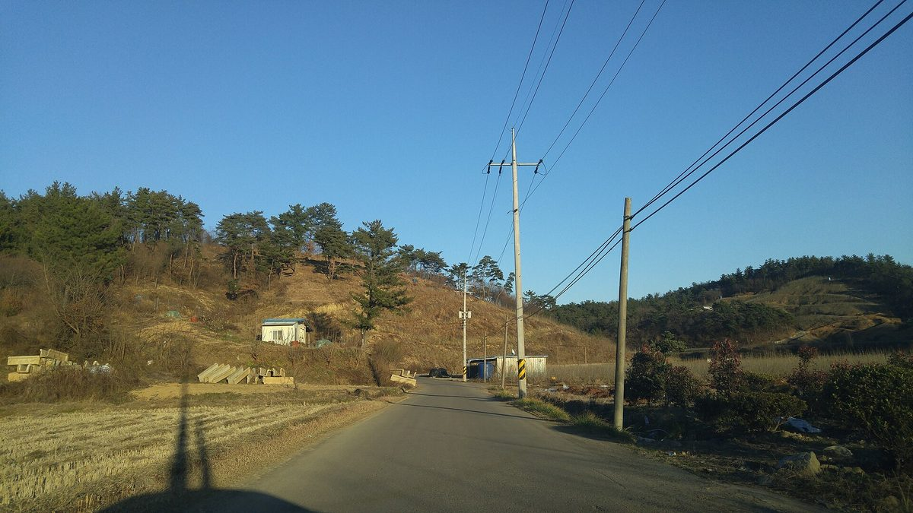

이격거리 규제 풀린 서부경남 태양광 허가 급증…진주 70건 수준에서 올해 약 200건, 임차농·주민 갈등에 지자체 고민

사천 신규 허가 신청도 2년 전 147건에서 지난해 170건, 올해 이미 지난해 수준 육박…도로 이격거리 폐지·호남 계통 포화로 사업자 몰려, 주민 반대에도 법령상 허가 나야 하는 경우 있어
도로 기준 이격거리 규제가 사라진 뒤 진주·사천 등 서부경남에서 태양광 발전사업 허가와 신청이 크게 늘면서, 환경 훼손과 임차농 생계, 주민 반대를 둘러싼 갈등도 함께 커지고 있다. 진주시의 태양광 전기사업 허가는 지난해 70건 수준이었으나 올해는 벌써 약 200건에 이르렀고, 사천시의 신규 허가 신청도 2년 전 147건에서 지난해 170건으로 늘어난 데 이어 올해 이미 지난해 수준에 가까워졌다. 도로 이격거리 규제 폐지와 함께 호남권 전력 계통이 포화되자 사업자들이 경남으로 눈을 돌린 것이 주요 원인으로 꼽힌다. 현장에서는 더 높은 수익을 노린 지주가 임대차 계약을 끊고 영농형 태양광 사업에 직접 나서면 땅을 빌려 농사짓던 임차농이 설 자리를 잃을 수 있다는 우려와 함께, 일조량 감소에 따른 생산성 저하와 우량 농지의 무분별한 전환을 걱정하는 목소리가 나온다. 지자체는 집단 민원만을 이유로 허가를 내주지 않으면 사업자가 행정소송을 낼 수 있어 난감하다는 입장이며, 사천시 에너지 담당 주무관은 읍면동 주민 의견을 받지만 법령상 반대가 있어도 허가가 나야 하는 경우가 있어 의견 충돌이 생긴다고 설명했다.
시민에너지 관점
진주 한 곳에서만 태양광 허가가 한 해 사이 70건 수준에서 약 200건으로 늘었지만, 그 발전소들에 지역 주민이나 임차농이 지분으로 참여한다는 이야기는 들리지 않는다. 규제를 다시 조이자는 목소리가 나올 수 있지만, 호남 계통이 막히자 사업자가 경남으로 옮겨 왔듯 이격거리를 되살려도 사업은 다른 곳으로 옮겨 갈 뿐 '이익은 외지로, 불편은 마을로'라는 갈등의 뿌리는 그대로 남는다. 주민이 반대해도 허가를 내줘야 하는 지금의 법령 아래서는, 마을과 임차농이 발전소의 주인이 될 길을 열어야 반대가 참여로 바뀔 수 있다. 허가 단계에서 주민 지분 참여나 임차농 몫을 함께 담은 사업에 우선순위를 주는 방안부터 지자체와 정부가 서둘러 검토해야 한다.
출처: 투데이서경 2026-10-30 김동엽 원문 보기
離隔距離規制が緩和された慶尚南道西部で太陽光の許可が急増…晋州は70件程度から今年約200件、小作農・住民との対立に自治体が苦慮
泗川の新規許可申請も2年前の147件から昨年170件、今年すでに昨年並みに迫る…道路の離隔距離廃止と湖南の系統飽和で事業者が殺到、住民が反対しても法令上許可せざるを得ない場合も
道路を基準とする離隔距離規制がなくなった後、晋州（チンジュ）・泗川（サチョン）など慶尚南道西部で太陽光発電事業の許可と申請が大きく増え、環境破壊や小作農の生計、住民の反対をめぐる対立も膨らんでいる。晋州市の太陽光の電気事業許可は昨年は70件程度だったが、今年はすでに約200件に達し、泗川市の新規許可申請も2年前の147件から昨年は170件に増え、今年もすでに昨年の水準に近づいている。道路の離隔距離規制の廃止に加え、湖南（ホナム）地域の送電系統が飽和したことで事業者が慶尚南道に目を向けたことが主な要因とされる。現場では、より高い収益を狙う地主が賃貸借契約を打ち切って営農型太陽光事業に自ら乗り出せば、土地を借りて耕作してきた小作農が行き場を失いかねないとの懸念に加え、日照の減少による生産性の低下や優良農地の無秩序な転用を心配する声が上がっている。自治体は集団の苦情だけを理由に許可を出さなければ事業者に行政訴訟を起こされかねず苦慮しており、泗川市のエネルギー担当職員は、邑・面・洞で住民の意見を聞くものの、法令上は反対があっても許可しなければならない場合があり、意見の衝突が起きていると説明した。
市民エネルギーの視点
晋州1カ所だけで太陽光の許可が1年で70件程度から約200件に増えたが、それらの発電所に地域住民や小作農が持ち分で参加しているという話は聞こえてこない。規制を再び強めるべきだとの声も出うるが、湖南の系統が詰まると事業者が慶尚南道へ移ってきたように、離隔距離を復活させても事業はほかの場所へ移るだけで、「利益は外へ、負担は村へ」という対立の根はそのまま残る。住民が反対しても許可を出さなければならない今の法令の下では、村と小作農が発電所の持ち主になる道を開いてこそ、反対を参加に変えられる。許可の段階で住民の出資参加や小作農の取り分を盛り込んだ事業を優先する方策から、自治体と政府は急いで検討すべきだ。
出典: トゥデイ西京（Today Seokyung） 2026-10-30 キム・ドンヨプ 原文を読む
间距限制放宽后庆尚南道西部太阳能许可激增…晋州从约70件增至今年约200件，佃农与居民矛盾令地方政府为难
泗川新增许可申请也从两年前的147件增至去年的170件，今年已接近去年水平…道路间距规定取消、湖南电网饱和致业者涌入，即使居民反对，按法令有时仍须发放许可
以道路为基准的间距限制取消后，晋州、泗川等庆尚南道西部地区的太阳能发电项目许可和申请大幅增加，围绕环境破坏、佃农生计和居民反对的矛盾也随之加剧。晋州市的太阳能电力事业许可去年约为70件，今年已达约200件；泗川市的新增许可申请也从两年前的147件增至去年的170件，今年已接近去年的水平。除道路间距规定被取消外，湖南地区电网趋于饱和、业者转向庆尚南道被认为是主要原因。当地有人担心，地主若为追求更高收益而终止租赁合同、自行开展农光互补项目，租地耕作的佃农可能失去立足之地，也有人担忧日照减少导致生产率下降、优质农地被无序转用。地方政府表示，若仅因集体投诉而不予许可，业者可能提起行政诉讼，因而左右为难；泗川市能源事务负责人解释说，虽然会在邑、面、洞征求居民意见，但根据法令，即使有人反对也有必须发放许可的情况，由此产生意见冲突。
市民能源视角
仅晋州一地，太阳能许可一年之间就从约70件增至约200件，但没有听说当地居民或佃农以股份形式参与这些电站。也许会有人主张重新收紧规定，但正如湖南电网受阻后业者转往庆尚南道一样，即便恢复间距限制，项目也只会转移到别处，“收益流向外地、负担留给村庄”这一矛盾根源依然存在。在居民反对也须发放许可的现行法令下，只有为村庄和佃农打开成为电站主人的通道，反对才能转化为参与。地方政府和中央政府应尽快研究，在许可阶段优先考虑纳入居民入股或佃农份额的项目。
来源: Today Seokyung 2026-10-30 Kim Dong-yeop 查看原文
Solar permits surge in western South Gyeongsang after setback rules are eased, with Jinju going from about 70 last year to some 200 this year as conflicts with tenant farmers and residents trouble local governments
New permit applications in Sacheon rose from 147 two years ago to 170 last year and are already near that level this year; the scrapping of road setbacks and grid saturation in the Honam region are drawing developers, and permits must sometimes be granted despite residents' objections
Since road-based setback rules were scrapped, permits and applications for solar power projects have risen sharply in western South Gyeongsang Province, including Jinju and Sacheon, and conflicts over environmental damage, tenant farmers' livelihoods and residents' opposition are growing with them. Jinju issued around 70 solar electricity business permits last year but has already reached about 200 this year, while new permit applications in Sacheon rose from 147 two years ago to 170 last year and are already approaching last year's level. Besides the abolition of road setbacks, saturation of the power grid in the Honam region, which has pushed developers toward South Gyeongsang, is cited as a main cause. Locally, there are worries that if landowners chasing higher returns end their leases and launch agrivoltaic projects themselves, tenant farmers who rent the land could be pushed out, along with concerns about lower yields from reduced sunlight and the indiscriminate conversion of prime farmland. Local governments say they are in a bind because rejecting a permit solely on the basis of collective complaints could prompt developers to file administrative lawsuits, and an energy official in Sacheon explained that while the city collects residents' opinions at the town and neighbourhood level, there are cases where the law requires a permit to be granted even if residents object, which leads to clashes.
Citizen Energy View
In Jinju alone, solar permits jumped from around 70 to about 200 within a year, yet nothing is heard of local residents or tenant farmers taking stakes in those plants. Some may call for tightening the rules again, but just as developers moved to South Gyeongsang when the Honam grid filled up, reviving setbacks would only push projects elsewhere and leave the root of the conflict untouched: profits flow out of the area while the burdens stay in the village. Under current law, which can require permits even over residents' objections, opposition will turn into participation only if villages and tenant farmers are given a path to become owners of the plants. Local and central governments should urgently consider, as a first step, giving priority at the permitting stage to projects that include resident shareholdings or a share for tenant farmers.
Source: Today Seokyung 2026-10-30 Kim Dong-yeop Read the original